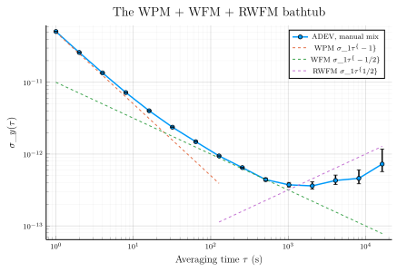
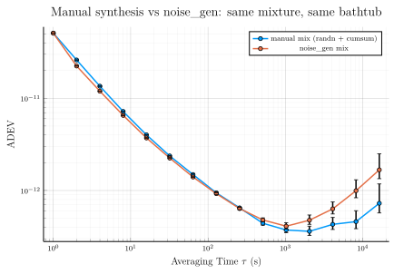

Phase data and frequency data
SigmaTau operates on two timing-data containers: PhaseData and FrequencyData. Both wrap a regularly-sampled vector and the sample interval $\tau_0$. Every public deviation function (adev, mdev, hdev, the total family, …) accepts either container — the package converts internally as needed.
This tutorial:
- Synthesizes one day of realistic clock data by hand — white PM plus white FM plus random-walk FM, the mixture behind the classic bathtub-shaped ADEV curve.
- Wraps the record in a
PhaseData, derives the matchingFrequencyData, and walks the phase ↔ frequency identity that ties the two containers together. - Runs
adevon the record and reads off the three noise regimes. - Regenerates an equivalent record in one call with
noise_gen, the built-in synthesizer, and shows the two records agree.
The companion tutorial Computing the Allan deviation digs into every field of the result object adev returns.
using SigmaTau
using RandomA realistic noise mixture
A real clock record is never a single noise type. Three components cover a typical 1 Hz measurement of a good oscillator, each specified by its Allan deviation at one second, σ_y(1 s):
- White FM (WFM), σ_y(1 s) = 1e-11 — the oscillator's own noise floor; every clock has one, and 1e-11 is rubidium / GPSDO class.
- White PM (WPM), σ_y(1 s) = 5e-11 — fast phase jitter added by the measurement chain (counter quantization, cables) rather than by the clock itself.
- Random-walk FM (RWFM), σ_y(1 s) = 1e-14 — slow frequency wander from temperature and aging, negligible at 1 s but growing with τ.
On log-log axes these contribute ADEV slopes of τ⁻¹ (WPM), τ^(−1/2) (WFM), and τ^(+1/2) (RWFM). The amplitudes are chosen so each slope owns a visible stretch of a one-day record: the WPM leg crosses under the WFM floor near τ = (5e-11 / 1e-11)² · 1 s = 25 s, and the RWFM rise overtakes the floor near τ = (1e-11 / 1e-14) · 1 s = 1000 s. Falling, then shallow, then rising — the bathtub.
Random.seed!(20260509)
τ₀ = 1.0 # sample interval (s) — 1 Hz data
N = 86_400 # number of samples — one day
σ1_wpm = 5.0e-11 # WPM σ_y(1 s) target
σ1_wfm = 1.0e-11 # WFM σ_y(1 s) target
σ1_rwfm = 1.0e-14 # RWFM σ_y(1 s) target1.0e-14Synthesis by hand
Each of these power laws has a textbook recipe built from randn and cumsum; the only care required is the constant that converts a σ_y(1 s) target into the white-noise amplitude that produces it.
WPM is independent Gaussian samples directly in phase. Independent phase samples of rms $\sigma_x$ give $\sigma_y(\tau_0) = \sqrt{3}\,\sigma_x/\tau_0$ — the m = 1 second difference $x_{k+2} - 2x_{k+1} + x_k$ of independent samples has variance $6\sigma_x^2$ — so the amplitude is $\sigma_x = \sigma_1\tau_0/\sqrt{3}$:
x_wpm = randn(N) .* (σ1_wpm * τ₀ / sqrt(3))86400-element Vector{Float64}:
-4.721643796061037e-11
-3.410413359820216e-11
-2.0867418547694663e-11
-6.293366896808695e-12
4.442068811302485e-13
1.460126698808938e-11
7.955416947297623e-12
1.2159401450854244e-12
-4.8316191129029234e-11
-4.254069327428784e-11
⋮
-2.0919534604551183e-11
-1.4994127032847434e-12
-8.955676394110606e-12
2.4948542275405106e-11
1.0210163142813862e-11
5.696522847244562e-11
-3.3637854611262424e-12
-1.486546170366275e-11
-2.0928285609991577e-11WFM is independent Gaussian samples in fractional frequency. Independent frequency samples of rms $\sigma_w$ give $\sigma_y(\tau_0) = \sigma_w$ exactly, so the target is the amplitude with no conversion. Phase is the running integral of frequency, $x_k = \tau_0 \sum_{j \le k} y_j$, which is a cumsum:
y_wfm = randn(N) .* σ1_wfm
x_wfm = cumsum(y_wfm) .* τ₀86400-element Vector{Float64}:
2.8529977896346902e-12
-2.1130038648283117e-12
1.684207903820863e-11
1.910724628198672e-11
2.207658754932171e-11
2.619964757766999e-11
2.920255964303219e-11
2.8336508147309002e-11
3.646473854601096e-11
3.5958503830187485e-11
⋮
-3.3570720085369867e-9
-3.355184132854252e-9
-3.3446101541377544e-9
-3.3408408469753174e-9
-3.342610465750323e-9
-3.3483384636229272e-9
-3.350201240488614e-9
-3.3788893423150147e-9
-3.389747004626569e-9RWFM is a random walk in fractional frequency — a cumsum of white innovations, integrated once more to reach phase. A walk with per-step rms $\sigma_r$ gives $\sigma_y(\tau_0) = \sigma_r/\sqrt{2}$ — at m = 1 the Allan variance of a random walk is $\sigma_r^2/2$ — so the innovation amplitude is $\sigma_r = \sqrt{2}\,\sigma_1$:
y_rwfm = cumsum(randn(N)) .* (sqrt(2) * σ1_rwfm)
x_rwfm = cumsum(y_rwfm) .* τ₀86400-element Vector{Float64}:
4.090926312929837e-15
1.7369947797988114e-14
3.972900163672981e-14
1.8497024192906187e-14
-6.501885634758646e-17
-1.2667698705873053e-14
-2.5681644979610276e-14
-4.460518043569728e-14
-6.575074590463771e-14
-8.815513933462075e-14
⋮
1.6107729771621527e-7
1.6108224245377783e-7
1.6108717593271575e-7
1.610920797759582e-7
1.610970013658798e-7
1.6110191678899197e-7
1.6110682106030597e-7
1.6111171871243174e-7
1.6111662569750152e-7The three processes are independent, so the record is their plain sum in phase:
x = x_wpm .+ x_wfm .+ x_rwfm
pd = PhaseData(x, τ₀)PhaseData{Float64}(86400 samples, τ₀=1 s)A PhaseData exposes the sample vector and the cadence:
length(pd.x), pd.tau0(86400, 1.0)The raw record shows the fast WPM jitter riding on the slow RWFM wander; the WFM floor between them is what adev digs out below.
using Plots
t = (0:N-1) .* τ₀
plot(t, pd.x;
xlabel = raw"Time \(t\) (s)",
ylabel = raw"Phase residual \(x(t)\) (s)",
title = "One day of synthetic clock phase (WPM + WFM + RWFM)",
legend = false,
lw = 0.8)
The same record as fractional frequency
Fractional-frequency residuals are the first difference of phase,
\[y_k \;=\; \frac{x_{k+1} - x_k}{\tau_0},\]
where $x_k$ is the phase residual in seconds and $y_k$ is dimensionless. Differencing an N-point phase record yields N − 1 frequency points. Construct a FrequencyData directly when your instrument reports frequency offsets instead of phase:
fd = FrequencyData(diff(pd.x) ./ τ₀, τ₀)
length(fd.y), fd.tau0(86399, 1.0)Phase ↔ frequency round trip
Integrating goes the other way, up to a constant: cumsum(fd.y) .* τ₀ returns $x_{k+1} - x_1$, because the absolute phase offset was lost in the difference and cannot come back. Deviation estimators difference the data anyway, so the lost offset never enters any σ_y(τ):
x_back = cumsum(fd.y) .* τ₀
maximum(abs.(x_back .- (pd.x[2:end] .- pd.x[1])))2.6469779601696886e-23This diff / cumsum pair is exactly the conversion SigmaTau runs internally (_phase_to_freq / _freq_to_phase in src/grids.jl) whenever a deviation function receives the "other" container, so both representations give the same answer — to within the one sample the difference drops:
r_pd = adev(pd, [1, 16, 256]; ci = false)
r_fd = adev(fd, [1, 16, 256]; ci = false)
maximum(abs.(r_fd.dev ./ r_pd.dev .- 1))5.142611298136757e-6The bathtub
An octave τ-grid from 1 s to 16384 s (≈ 4.6 h) spans all three regimes. adev takes the averaging factors m; the averaging times are $\tau = m\,\tau_0$.
m_values = [2^k for k in 0:14]
taus = m_values .* τ₀
r_manual = adev(pd, m_values)
plot(r_manual;
label = "ADEV, manual mix",
xlabel = raw"Averaging time \(\tau\) (s)",
ylabel = raw"\(\sigma_y(\tau)\)",
title = "The WPM + WFM + RWFM bathtub",
legend = :topright,
lw = 1.5)
plot!(taus[1:8], σ1_wpm ./ taus[1:8]; ls = :dash, label = raw"WPM \(\sigma_1\tau^{-1}\)")
plot!(taus, σ1_wfm ./ sqrt.(taus); ls = :dash, label = raw"WFM \(\sigma_1\tau^{-1/2}\)")
plot!(taus[8:end], σ1_rwfm .* sqrt.(taus[8:end]); ls = :dash, label = raw"RWFM \(\sigma_1\tau^{1/2}\)")
Three slopes, two knees. The curve falls along the WPM guide line, flattens onto the WFM floor past the τ ≈ 25 s crossover, and turns upward where the RWFM wander overtakes the floor near τ ≈ 1000 s. Each dashed guide is the ideal single-noise slope anchored at that component's σy(1 s) target. The error bars come from the χ² confidence machinery that runs by default — the companion tutorial [Computing the Allan deviation](02compute_adev.md) unpacks them.
The built-in generator
Hand-rolling scale factors is the old-fashioned way, and it only goes so far: the two flicker noises (FPM, FFM) have no randn / cumsum construction at all. noise_gen wraps a spectral shaper that covers all five power laws through one interface — pass the target σy(1 s) per noise type, keyed by the exponent α of the fractional-frequency power spectrum ``Sy(f) = h_\alpha f^\alpha``:
| α | Noise type | this record |
|---|---|---|
| 2 | WPM | 5e-11 |
| 1 | FPM | — |
| 0 | WFM | 1e-11 |
| -1 | FFM | — |
| -2 | RWFM | 1e-14 |
pd_gen = noise_gen(PhaseData, N, τ₀;
sigma1 = Dict(2 => σ1_wpm, 0 => σ1_wfm, -2 => σ1_rwfm))PhaseData{Float64}(86400 samples, τ₀=1 s)One call replaces the whole synthesis section above. Each component is rescaled so its empirical σy(1 s) hits the requested target exactly for the drawn realization, the components are statistically independent, and the first argument selects the output container — `noisegen(FrequencyData, …)returns theysequence instead. Reproducibility works the same way as the manual path: seed the global RNG beforehand, or pass anAbstractRNGvia therngkeyword. If you work from PSD coefficients rather than a spec sheet, thehkeyword acceptsh_\alphavalues directly in place ofsigma1`.
The two records are independent draws of the same nominal mixture, so what should agree is the shape — the same three slopes and the same two knees — not the point values. Pointwise differences come from two sources: each record is a single realization (the scatter grows toward long τ as the degrees of freedom shrink), and the two routes discretize the power laws differently (sample-domain randn / cumsum versus a shaped discrete spectrum), which shifts individual octaves by up to ~15 %:
r_gen = adev(pd_gen, m_values)
plot(r_manual;
label = "manual mix (randn + cumsum)",
xlabel = raw"Averaging time \(\tau\) (s)",
ylabel = raw"\(\sigma_y(\tau)\)",
title = raw"Manual synthesis vs noise\_gen: same mixture, same bathtub",
legend = :topright,
lw = 1.5)
plot!(r_gen; label = raw"noise\_gen mix", lw = 1.5)
println("τ (s) ADEV manual ADEV noise_gen ratio edf")
for i in eachindex(m_values)
println(lpad(round(Int, r_manual.tau[i]), 5), " ",
rpad(round(r_manual.dev[i]; sigdigits = 3), 11), " ",
rpad(round(r_gen.dev[i]; sigdigits = 3), 14), " ",
rpad(round(r_gen.dev[i] / r_manual.dev[i]; digits = 2), 6), " ",
round(r_manual.edf[i]; digits = 1))
endτ (s) ADEV manual ADEV noise_gen ratio edf
1 5.1e-11 5.09e-11 1.0 44433.5
2 2.61e-11 2.24e-11 0.86 44432.8
4 1.35e-11 1.2e-11 0.88 33765.2
8 7.2e-12 6.53e-12 0.91 24267.2
16 4.01e-12 3.72e-12 0.93 16846.0
32 2.37e-12 2.25e-12 0.95 3927.0
64 1.49e-12 1.4e-12 0.94 1991.9
128 9.43e-13 9.24e-13 0.98 1010.2
256 6.48e-13 6.37e-13 0.98 2853.8
512 4.41e-13 4.79e-13 1.09 196.2
1024 3.73e-13 4.1e-13 1.1 97.2
2048 3.61e-13 4.76e-13 1.32 37.6
4096 4.29e-13 6.32e-13 1.47 22.9
8192 4.6e-13 9.94e-13 2.16 10.6
16384 7.27e-13 1.67e-12 2.3 4.4The ratio sits near one through the bathtub floor and walks away from it over the last octaves. Read the edf column alongside: by τ = 16384 s a one-day record retains fewer than five equivalent degrees of freedom, so two independent realizations can legitimately differ there by a factor of two. That scatter is a property of the record length, not of either generator.
Where to go next
- Computing the Allan deviation — every field of the
StabilityResultreturned byadev, the default τ-grid, and the plot recipe used above. - Characterizing a drifting clock —
noise_genin action on a record where ADEV is the wrong tool.